Orquestación de alto rendimiento con servidor TFTP RFC 1350 en memoria RAM (Zero Disk I/O), automatización SSH con Paramiko y exclusión mutua por hardware para el flasheo concurrente de switches gestionables SOMOS S600W-5GT-2S+_FB.
El sistema desacopla la presentación visual, la sincronización entre hilos, el cliente SSH y el motor de transferencia TFTP para garantizar estabilidad absoluta en entornos de laboratorio y staging.
Seleccione una capa para visualizar sus garantías de seguridad y diseño de hilos.
# Código fuente representativo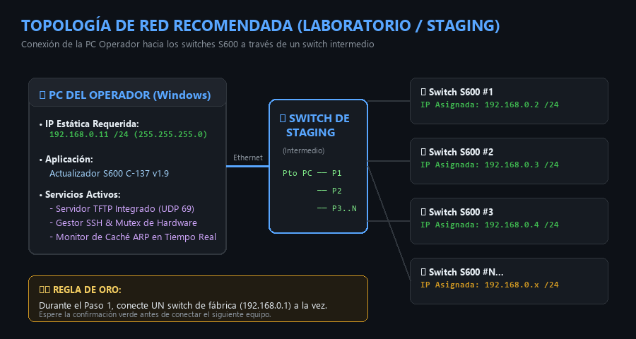
Jamás conecte simultáneamente dos switches nuevos con la IP de fábrica (192.168.0.1) a la red de staging. Ambos equipos colisionarían en la capa de enlace (ARP) y en capa IP. El Paso 1 resuelve esto asignando IPs secuencialmente mediante exclusión mutua de hardware.
Identificación física de interfaces, puertos de staging, bahías de fibra óptica 10G y procedimiento de reinicio por hardware para el modelo SOMOS S600W-5GT-2S+_FB.
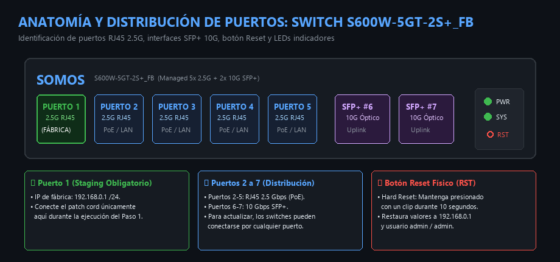
Puerto primario obligatorio de fábrica. Toda asignación secuencial inicial (Paso 1) se realiza conectando el cable directo a este puerto.
Puertos de datos y alimentación PoE pasiva hacia Access Points u otros switches secundarios en despliegues FTTH/WISP.
Bahías para transceptores ópticos SFP+ o cables DAC a 10 Gigabits para interconexión a la red troncal (Core / Distribución).
Presionar RST durante 10 segundos restaura IP a 192.168.0.1. El LED SYS parpadeante indica bootloader; fijo indica sistema operativo listo.
Resuelve de raíz el conflicto de IP de fábrica conectando los switches uno a uno al Puerto 1. La herramienta detecta el equipo, limpia la caché ARP del sistema operativo, aplica la nueva IP en VLAN 1 y persiste los cambios en Flash.
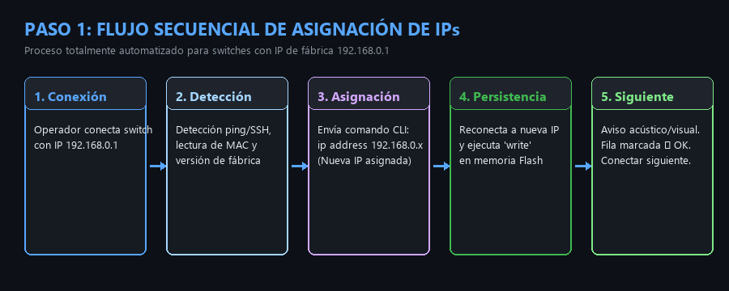
El software bloquea la asignación de 192.168.0.1 (origen) y la IP del PC local para prevenir conflictos de enrutamiento.
| # | Nombre Switch | IP Asignada | Máscara | Interfaz |
|---|
# Script CLICon todos los switches interconectados en el switch de staging (cada uno con su IP única), el motor orquesta la descarga simultánea por TFTP RFC 1350 desde un buffer en RAM, graba la memoria Flash, gestiona el reinicio vigilando la caída de enlace y verifica la versión por SSH.
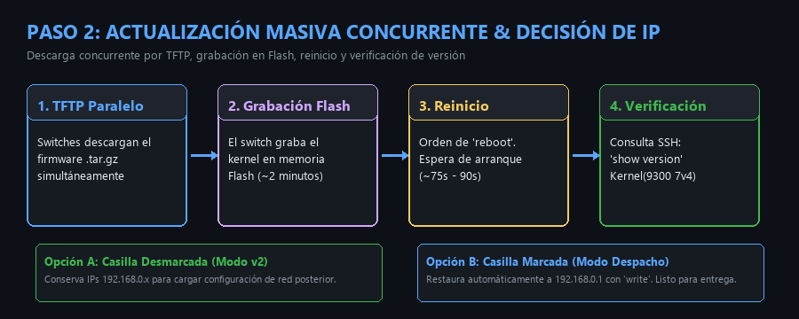
Los switches conservan sus IPs únicas para continuar inmediatamente con la configuración de VLANs, aprovisionamiento de servicios FTTH o enrolamiento en el NMS central.
Al culminar la verificación con éxito, cada hilo reasigna 192.168.0.1 y ejecuta write. Los switches quedan listos para embalaje y entrega limpia a bodega.
En el entorno ruidoso de un laboratorio de telecomunicaciones, la aplicación emite firmas de frecuencia exactas mediante síntesis de audio para que el operador no tenga que mirar constantemente la pantalla.
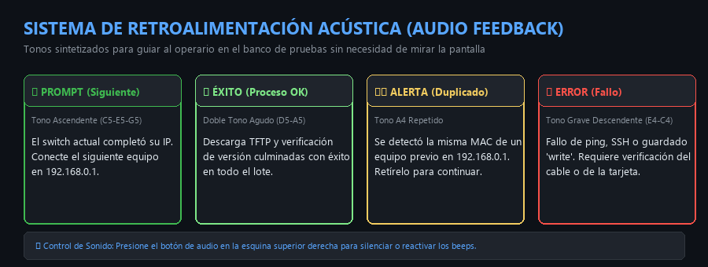
Inspeccione en alta resolución los diagramas de ingeniería, capturas de la interfaz en producción y fotografías reales del banco de pruebas en laboratorio.
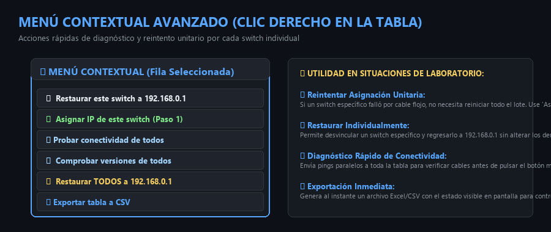
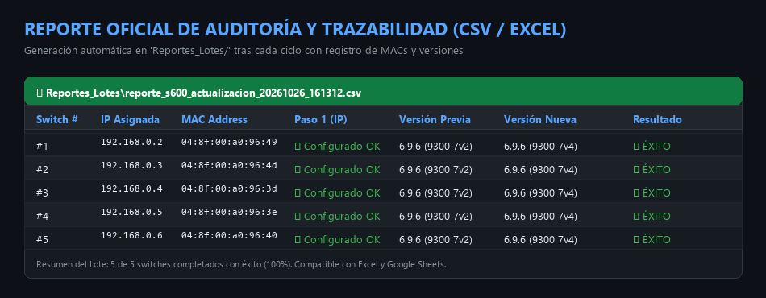
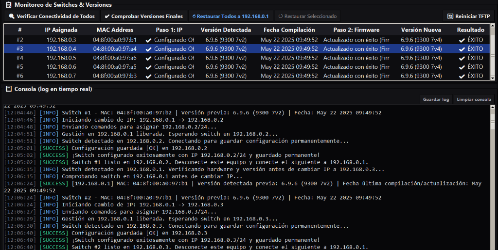
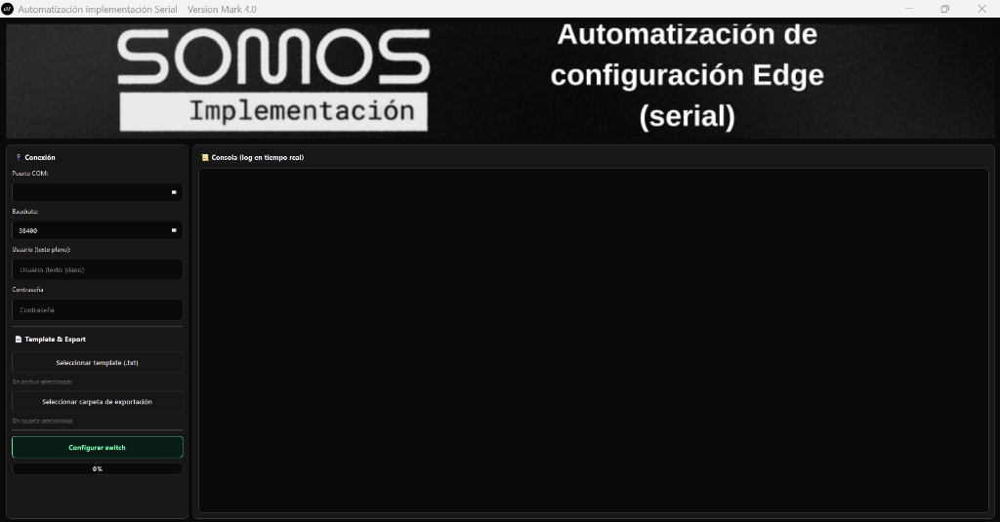
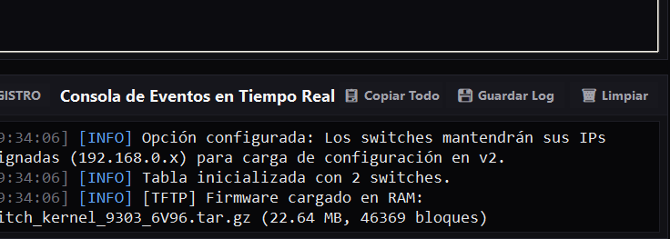
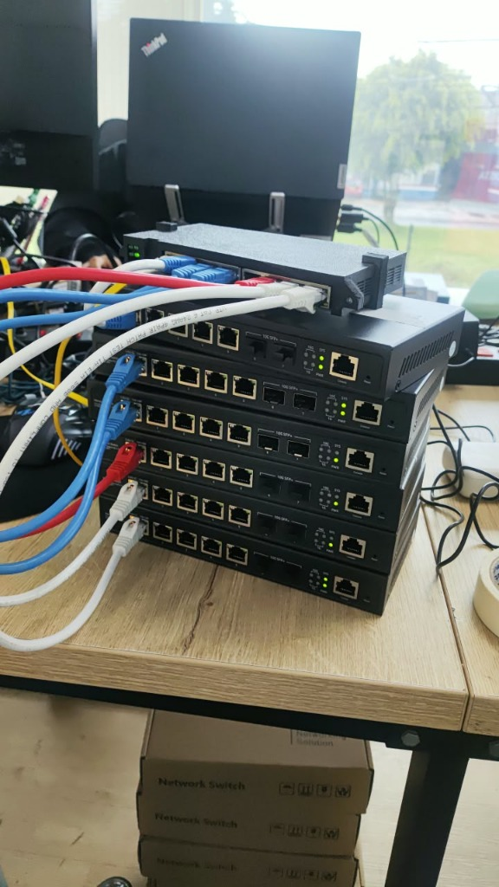
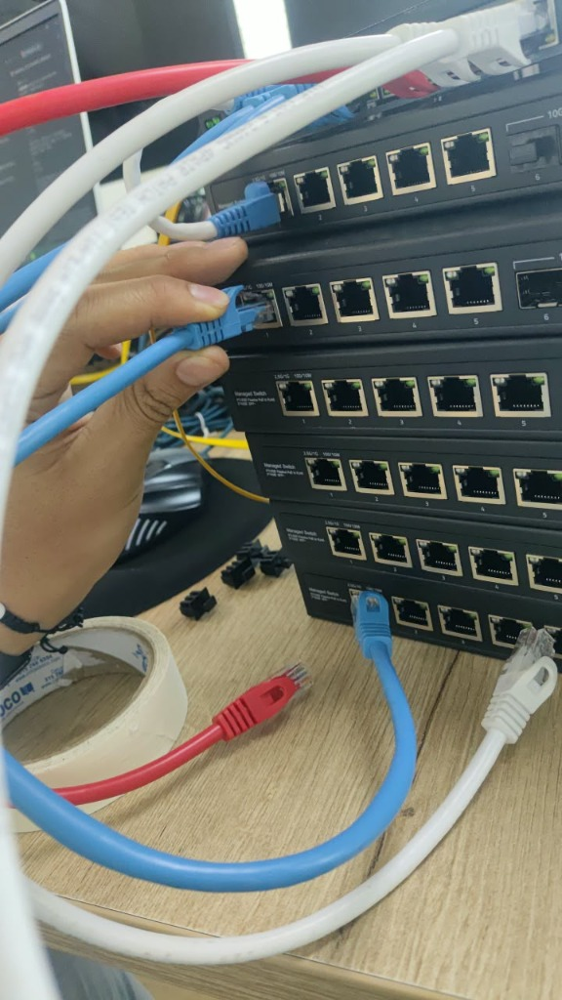
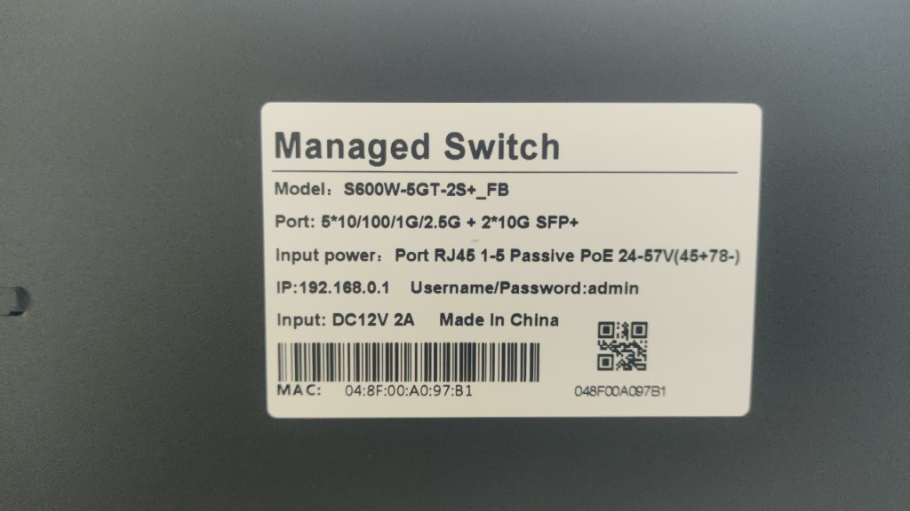
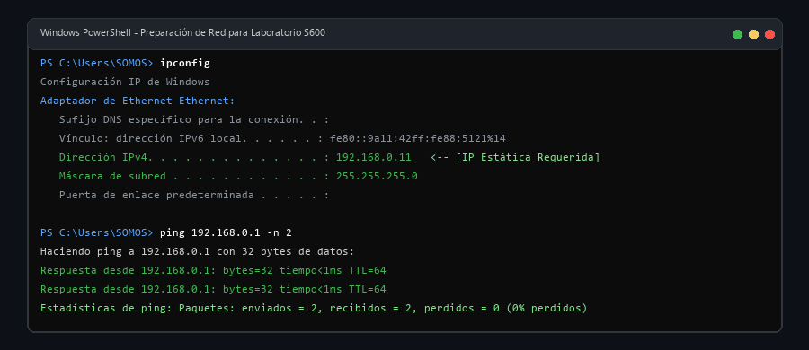
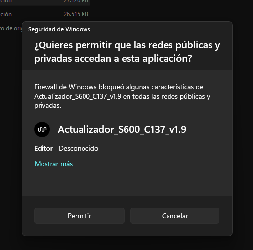
Procedimiento exacto paso a paso para sincronizar el repositorio local con GitHub (SantiagoRodriguezSOMOS/Actualizador-S600) y publicar esta documentación web en GitHub Pages desde la carpeta /docs.
Consulta nuestra guía exhaustiva para principiantes: GUIA_DESPLIEGUE_GITHUB.md. Explica cómo subir los archivos mediante la interfaz web de GitHub (github.com/new) o la aplicación oficial GitHub Desktop sin ejecutar ningún comando en consola.
En sistemas Windows donde el comando git no esté cargado de forma predeterminada en el entorno de PowerShell, añada la ruta oficial de Git para la sesión actual:
$env:Path += ";C:\Program Files\Git\cmd"
git --versionActualice el origen remoto para sustituir el marcador genérico por el repositorio de producción de la organización:
cd "c:\Users\Administrador\Documents\Desarrollo\Actualizador_S600_GitHub"
git remote set-url origin https://github.com/SantiagoRodriguezSOMOS/Actualizador-S600.git
git remote -v
Añada todos los archivos del proyecto, incluyendo el código fuente, suite de pruebas y la carpeta docs/ recién generada con todos sus recursos independientes:
git add .
git status
git commit -m "feat: Landing page interactiva y documentacion oficial para GitHub Pages v1.9"
Defina la rama principal como main y sincronice con el repositorio remoto de GitHub:
git branch -M main
git push -u origin main
Acceda a la configuración del repositorio en GitHub para activar el despliegue automático desde la carpeta /docs:
https://github.com/SantiagoRodriguezSOMOS/Actualizador-S600/settings/pagesDeploy from a branch.main y en el menú de carpeta elija /docs.
En menos de 60 segundos, GitHub Actions compilará la página y estará disponible públicamente en:
https://santiagorodriguezsomos.github.io/Actualizador-S600/
Referencia rápida de comandos de consola del switch y resolución de bloqueos habituales de firewall y caché de red.
| Comando Switch CLI | Contexto / Modo | Acción |
|---|---|---|
enable |
Modo Usuario | Ingresa a modo privilegiado (Prompt: Switch#). |
configure terminal |
Modo Privilegiado | Ingresa a modo de configuración global. |
interface vlan1 |
Configuración Global | Accede a la interfaz de administración VLAN 1. |
ip address <ip> 255.255.255.0 |
Configuración Interfaz | Asigna la dirección IP de gestión al switch. |
download switch <ip_tftp> <fw.tar.gz> |
Modo Privilegiado | Inicia descarga del firmware por TFTP (Puerto 69). |
reboot |
Modo Privilegiado | Reinicia el sistema operativo del switch. |
show version |
Modo Privilegiado | Verifica versión de firmware, kernel y MAC address. |
write |
Modo Privilegiado | Persiste configuración a la memoria Flash ROM. |
Si las descargas TFTP fallan por timeout en el Paso 2, abra PowerShell como Administrador y ejecute la siguiente regla de entrada:
New-NetFirewallRule -DisplayName "SOMOS S600 TFTP Server" -Direction Inbound -Protocol UDP -LocalPort 69 -Action Allow
Si Windows retiene en memoria la dirección MAC de un switch anterior en la IP 192.168.0.1, purgue la tabla de vecinos ARP:
arp -d 192.168.0.1
# O purga completa:
netsh interface ip delete arpcache